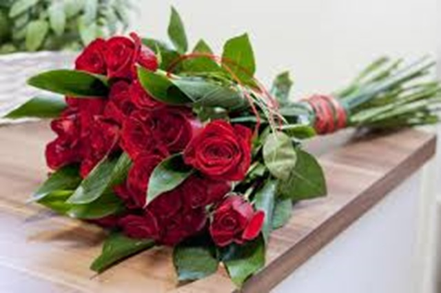
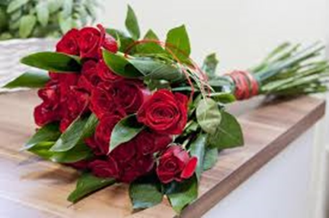

BloomPetals
Chez BloomPetals, nous croyons que chaque célébration mérite d'être parée de la beauté naturelle des fleurs. Nous sommes une entreprise passionnée et créative spécialisée dans la confection de magnifiques bouquets floraux pour embellir vos événements spéciaux. Que ce soit un mariage, un anniversaire, une réception ou toute autre occasion festive, nos artisans floraux talentueux travaillent avec dévouement pour créer des arrangements uniques et époustouflants qui émerveilleront vos invités.


 
